Objetivo: Descarregar os dados de uma rede de 69 barras utilizando o software OpenDSS com interface no Python. Dessa forma, será feita uma análise dos dados para propor alternativas de melhorias no desempenho da rede.
Conforme observado abaixo, o fluxo de carga total apresenta um desvio de tensão abaixo do limite mínimo de 5%. Trata-se de um sistema trifásico com as fases organizadas em A, B e C.
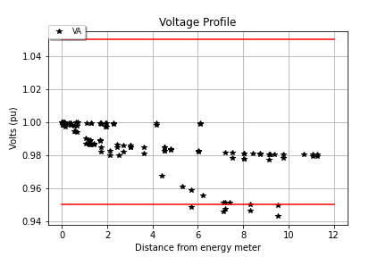 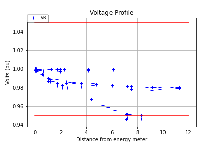 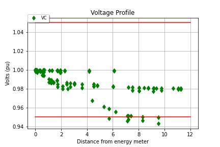Observação: os gráficos comprovam que a carga é equilibrada pois as tensões nos três nós são equivalentes.
Observação: Conforme as simulações geradas pelo OpenDSS, as linhas que apresentaram maior taxa de perda foram a 6, 7 e 57, sendo esta última com o valor elevado (5,34939 kW) equivalente a 1,61% do valor total. Em relação aos transformadores, pode-se citar o 50 que possui o valor mais elevado (0,14527 kW).
Carga horária 18h-19h
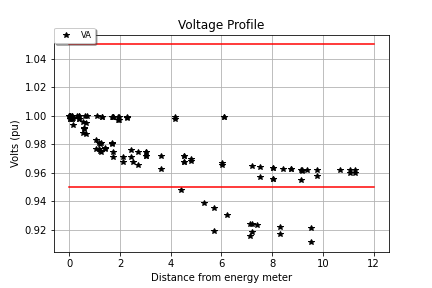 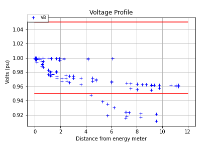 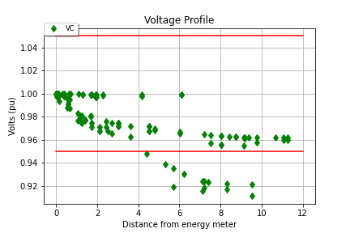Observação: Foram simulados todos os fluxos de carga durante as 24h e observou-se que o intervalo das 18h-19h apresentou uma carga intermediária em criticidade.
Observação: Conforme as simulações geradas pelo OpenDSS, a carga apresentou perdas totais de 5,96% (48,6% maior em relação a média da carga total do dia).
Carga horária 20h-21h
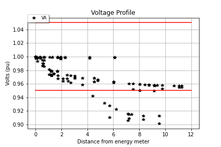 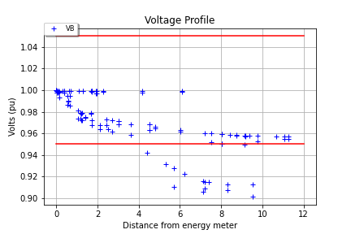 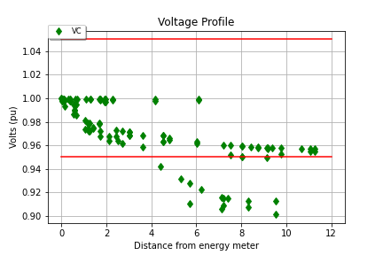Observação: Foram simulados todos os fluxos de carga durante as 24h e observou-se que o intervalo das 20h-21h apresentou a carga mais crítica.
Observação: Conforme as simulações geradas pelo OpenDSS, a linha que apresentou a maior taxa de perda foi a linha 57 com (15,20609 kW) equivalente a 2,76% do valor total. Em relação aos transformadores, pode-se citar o 50 que possui o valor mais elevado (0,41290 kW).
Carga horária 23h-24h


Observação: Foram simulados todos os fluxos de carga durante as 24h e observou-se que o intervalo das 23h-24h apresentou uma carga de criticidade mínima.
Observação: Conforme as simulações geradas pelo OpenDSS, a carga apresentou perdas totais de 4,01% (igual a média da carga total do dia).
Foram propostas duas altenativas para melhoria do desempenho da rede. A primeira utilizando reguladores de tensão e a segunda inserindo bancos de capacitores.As soluções estão apresentadas abaixo:
Reguladores de tensão
Rede total
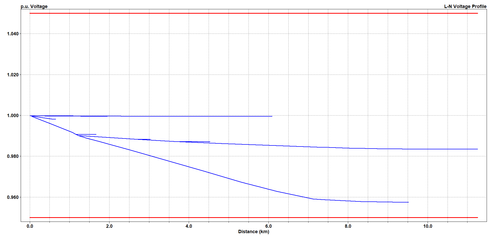Observação: A tensão ficou dentro da variação do limite de 5% e as perdas totais da rede reduziram em 16,46%. Observa-se que existe uma desvantagem nessa alternativa visto que a potência ativa total do sistema é reduzida e pode afetar os consumidores finais.
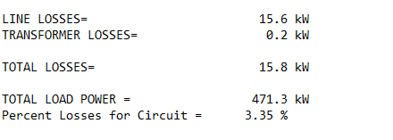Carga horária 20h-21h
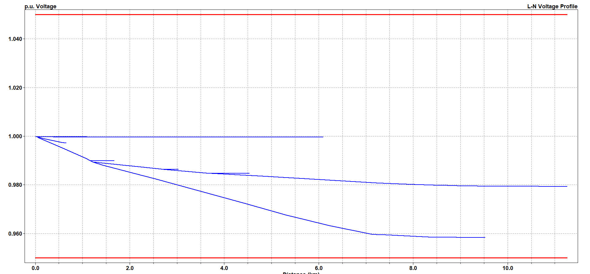Observação: A tensão ficou dentro da variação do limite de 5% e as perdas totais da rede reduziram em 54,41%. Observa-se que existe uma desvantagem nessa alternativa visto que a potência ativa total do sistema é reduzida pela metade e pode afetar os consumidores finais.
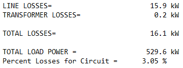Banco de capacitores
Rede total
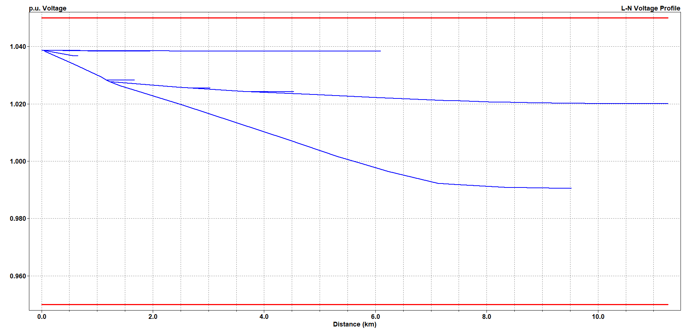Observação: A tensão ficou dentro da variação, porém ocorre um aumento da mesma na rede em comparação com o estado inicial e também do circuito com reguladores aplicados.
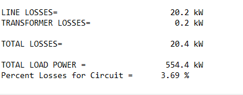Observação: Ocorre diminuição das perdas no estado inicial, porém a diminuição não é tão alta se comparada a alternativa do regulador de tensão.
Carga horária 18h-19h
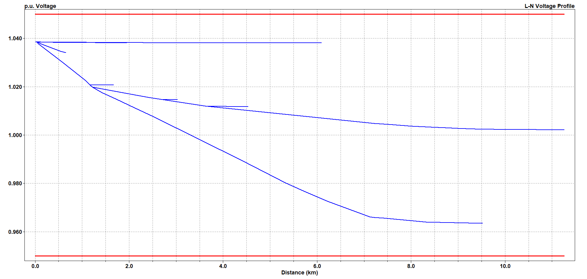Observação: A tensão ficou dentro da variação, porém as perdas da rede não sofreram redução significativa se comparadas a simulação original (redução de 8,56% nas perdas da carga geral).
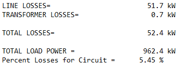Carga horária 20h-21h
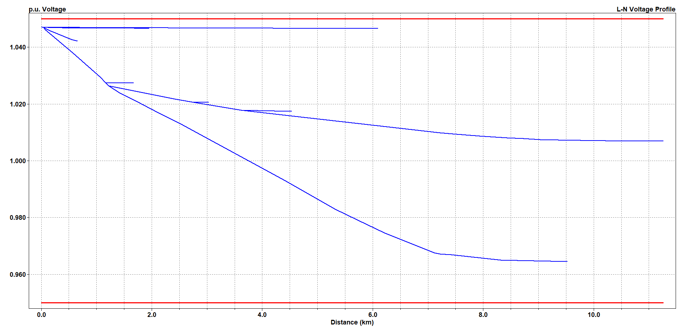Observação: A tensão ficou dentro da variação, porém as perdas da rede não sofreram redução significativa se comparadas a simulação original (redução de 10,31% nas perdas da carga geral).
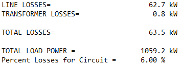Carga horária 23h-24h
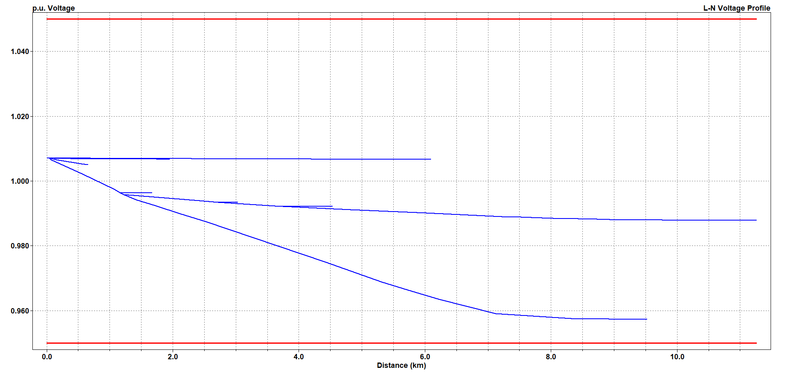Observação: A tensão ficou dentro da variação, porém as perdas da rede não sofreram redução significativa se comparadas a simulação original (redução de 1,50% nas perdas da carga geral).
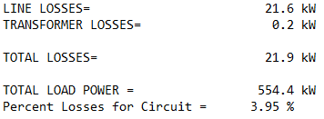Através da análise da rede em diversos pontos, pode-se observar que as duas soluções propostas são viáveis tecnicamente e atendem as necessidades do sistema até nos piores horários,
mesmo apresentando vantagens e desvantagens. Em relação a alternativa de reguladores de tensão observa-se que as perdas possuem uma redução maior comparada com a alternativa de
banco de capacitores, porém diminuindo a potência ativa total da rede, tornando necessário um estudo prévio sobre o impacto desta diminuição nos consumidores finais.
A inserção do banco de capacitores mantém a potência ativa da rede porém aumenta a tensão vista por todos os nós.Foi considerado um banco de capacitores com diversos estágios para
atender de forma mais flexível as demandas horárias da rede. Como este aumento ainda pertence aos 5% a mais permitidos pela norma, não será prejudicial as cargas, contanto que elas não
sofram influência da diminuição da corrente. Além disso, no caso do fluxo de carga de 20h-21h não reduz as perdas significativamente, o que pode ser prejudicial para o consumidor final.